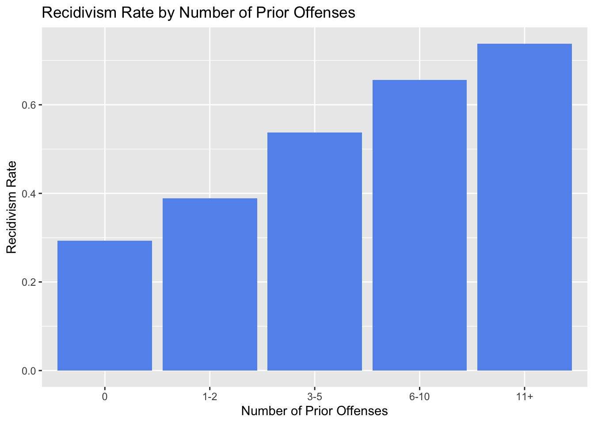

── Conflicts ────────────────────────────────────────── tidyverse_conflicts() ──
✖ dplyr::filter() masks stats::filter()
✖ dplyr::lag() masks stats::lag()
ℹ Use the conflicted package (<http://conflicted.r-lib.org/>) to force all conflicts to become errors
#Q1.2 There are 7,214 observations and 17 variables in the dataset. The unit of observations are individuals accused of crimes.
#Q1.3mean(compas$recidivism)
[1] 0.4506515
#Q1.3 The overall recidivism rate in the data is 45.07%. The recidivism outcome is binary as recidivism is either 1 or 0 for whether someone was rearrested within two years or not. This is important when we interpret the predictions from the model, because the LPM creates a line of best fit and can predict values outside of 0 to 1.
#Q1.4 Some of the variables with the most variation are age and priors_count. Some of the variables with the least variation are native_american and asian.
#Q1.5 Create a bar chart showing the recidivism rate by number of prior offenses (priors_count). Group priors_count into categories: 0, 1–2, 3–5, 6–10, and 11+. compas <- compas %>%mutate(priors_ct =case_when(priors_count ==0~"0", priors_count %in%1:2~"1-2", priors_count %in%3:5~"3-5", priors_count %in%6:10~"6-10", priors_count >=11~"11+"),priors_ct =factor(priors_ct, levels =c("0", "1-2", "3-5", "6-10", "11+")))recid_rt_priors <- compas %>%group_by(priors_ct) %>%summarize(recid_rate =mean(recidivism, na.rm =TRUE))ggplot(recid_rt_priors, aes(x = priors_ct, y = recid_rate)) +geom_col(fill ="cornflowerblue") +labs(title ="Recidivism Rate by Number of Prior Offenses",x ="Number of Prior Offenses",y ="Recidivism Rate")

#Q1.5 Based on this bar chart, it appears as though a higher recidivism rate is associated with a larger number of prior offenses.
#Q2.3 The in-sample RMSE (predictions on the training data) is 0.4605811. The out-of-sample RMSE (predictions on the test data) is 0.462227. The gap between in-sample and out-of-sample RMSE is 0.001645971. With 16 predictors, the OLS is likely not overfitting. I believe this because the gap between the two sets is very small indicating that the two RMSE’s are very similar to each other. Thus, it doesn’t appear as though the model is overfitting.
#Q2.4 (A) The 5-fold CV estimate of RMSE is 0.4620144. This appears to be the exact same as the out-of-sample RMSE (predictions on the test data) which was 0.462227. (B) In my own words, cross-validation is more reliable than a single train/test split because cross-validation is more immune to errors due to within group variation. As such, a single train/test split is reliant on which observations are in which group, but cross-validation uses multiple splits so it gives a more reliable output value. (C) Finally, when we use cv.glmnet() later, it does this same process internally to choose the penalty parameter 𝜆. Cross-validation is the right tool for choosing 𝜆, because it essentially creates room for the creation of “new data” many times so that it is not just on the training data. For that reason it is reliable for out of sample predictions and can determine a good penalty parameter.
3 The Kitchen Sink: What Happens When You Add Too Many Predictors?
#Q3.1#somehow my dataset got all mixed up so i am starting freshcompas <-read_csv("data/raw/compas_clean.csv")
Rows: 7214 Columns: 17
── Column specification ────────────────────────────────────────────────────────
Delimiter: ","
dbl (17): recidivism, age, female, black, hispanic, asian, other_race, nativ...
ℹ Use `spec()` to retrieve the full column specification for this data.
ℹ Specify the column types or set `show_col_types = FALSE` to quiet this message.
# Full interaction formulaf_full <- recidivism ~ (.)^2+I(age^2) +I(priors_count^2) +I(juv_fel_count^2) +I(juv_misd_count^2) +I(juv_other_count^2)# Create design matrices for glmnet (we'll need these later)X_train <-model.matrix(f_full, data = train)[, -1]X_test <-model.matrix(f_full, data = test)[, -1]y_train <- train$recidivismy_test <- test$recidivism# How many features now?ncol(X_train)
#Q3.2 (A) The in-sample RMSE for this model is 0.4485. (B) The out-of-sample RMSE is 0.4890. (C) The in-sample/out-of-sample gap is 0.0405. Compare to the simple 19-predictor OLS, this gap is quite a bit larger than the original gap of 0.0016. This indicates that likely the new OLS model is overfitting because the gap is so much larger. We get a larger gap when the model overfits because when more predictors are added they bring in more noise to the equation.
#Q3.3 Adding 180 interaction terms made the model’s in-sample fit better but its out-of-sample predictions worse because adding all of these new terms allows the model to fit the training data better. However, when you try to apply this to new data sets like in the test set, there are so many new predictors with more noise which makes the predictions on new data worse. This is called overfitting!
#Q4.1 (A)The optimal 𝜆 selected by cross-validation is 0.0138. (B) This plot shows the projected fit of a given model to a new data set that the model was not trained on. In our case, it shows the expected fit of the model on the test set after being trained on the train set.
#Q4.2 The out-of-sample RMSE for Ridge is 0.47. The simple OLS (16 vars) has an out-of-sample RMSE of 0.4622 and the kitchen-sink OLS (~141 vars) had one of 0.489. The new ridge regression RMSE seems to be just in between the RMSE from the OLS simple regression and the kitchen-sink OLS. This means the ridge reduces overfitting by shrinking the coefficients. In doing so, they trade some bias for less variance.
#Q4.3 It doesn’t seem as though ridge eliminated any variables. The ridge is just shrinking the coefficients it is not bringing any of them directly to zero so that they are removed.
(a) Of the ~141 variables 27 survived (non-zero coefficient) while 114 were eliminated.
(b)a few of the surviving interaction terms are age:female, black:juv_other_count, and felony:priors_ct6-10. These all seem to make substantive sense because age:female would indicate how the impact of age on recidivism would change across genders. Similarly black: juv_other_count would show the effect of juvenile offense counts across races and felony:prios_ct6-10 illustrates the impact of having 6 to 10 priors with whether the current charge is a felony.
(c) Baker (2025) argues that LASSO reduces “subjective discretion” in model building. What we see here illustrates this argument because it shows how LASSO automatically selects which variables to keep based on statistical evidence rather than other methodologies that allow the researcher to identify what to keep. This reduces subjective discretion because the choice is done automated by R rather than varying from person to person.
#Q5.3 The out-of-sample RMSE for LASSO is 0.4593. The out-of-sample RMSE for Ridge was 0.47. The simple OLS (16 vars) has an out-of-sample RMSE of 0.4622 and the kitchen-sink OLS (~141 vars) had one of 0.489. The new lasso regression RMSE is the smallest of all of these regressions though it is quite close in value to the simple OLS model and the ridge.This means the lasso reduces overfitting by shrinking the coefficients and keeping the most important variables and predictors.
#Q6.2 (a) The model with the lowest out-of-sample RMSE is the elastic net.
(b) The model with the best in-sample fit is likely the kitchen sink ols which is not the same model.
(c) Ultimately, this table teaches us much about the bias-variance tradeoff. As such, when more predictors are added to the point that there are perhaps too many predictors then it hurts test performance. Methods like Ridge, LASSO, and elastic net handle this by trading some bias for less variance, indicating a better out of sample fit and RMSE.
#Q6.3 Baker article connection
I found the Baker article really interesting. In Baker (2025) there are two experts in the Halliburton securities case who selected different peer firms and reached different conclusions about whether a stock drop was statistically significant. LASSO was able to help narrow the disagreement between dueling experts because it was able to take some subjectivity out of the equation. In this way, while before each indivdual expert would have chosen the variables or predictors they thought most important, the LASSO actually is able to automatically select predictors of most importance and shrink the coefficients of the predictors that are not very relevant to zero. As a result, the disagreement between the experts could likely be solved. Based on my experience with LASSO in this problem set, the aspect of the traditional OLS approach that gives the analyst the most room for manipulation would be which predictors to include. There are so many predictors that deciding which ones are the most important and how many to include is a bit of a tough decision. The researcher is really at the healm of making this decision and therefore I think it is probably the area with the most room for manipulation.
#Q6.4 Okay now suppose instead you wanted to know whether priors_count causes higher recidivism.
(a) The LASSO coefficient on priors_count would not answer this causal question. This is because there are a number of Omitted variables and confounding variables that could be present. I actually just did a study in my econometrics class on this very same data where we studied the causal relationship using an instrumental variable.
(b) The difference between using regression for prediction versus using it for causal inference is first off the goal of what you are trying to see. Prediction allows you to predict the probability or occurence of something whereas causal inference is more about how one thing will directly cause another thing. As such, using lasso, prediction allows you to forecast or foresee but it doesn’t necessarily indicate a causal relationship as we just expressed due to the potentiality for biased outcomes.
#Q6.5 yes there is a difference between the mean predicted recidivism rate of black defendents 0.512 and the mean predicted recidivism rate of white defendents 0.379. The actual recidivsm rate of black defenedents is higher than their predicted at 0.521, and the actual recidivism rate of white defendents is higher than their predicted at 0.402. The tradeoff of using prediction in criminal justice is that there are many omitted variables so we don’t know that something is causal. For instance, i implemented an instrumental variable on this dataset for judge toughness in another class. There is also a tradeoff on available information. Here there are just way more black individuals 729 than white 495, so we have more data to go off for them that is probably more accurate.